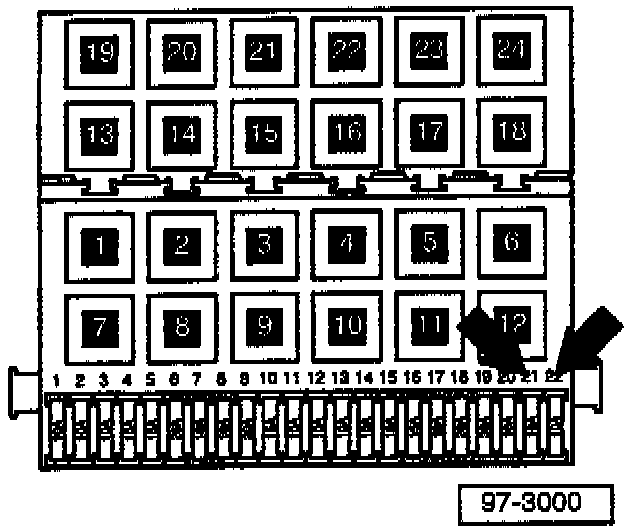

Antitheft Alarm - Sounds After Alarm is Set
Group: 96Number: 97-01
Date: Aug. 12, 1997
Subject:
Anti-theft Alarm Sounds after Alarm is Set
and Cannot be Switched Off
Model(s):
Golf, Jetta 1997
Condition
With anti-theft alarm system armed, the alarm sounds and cannot be switched off (also engine will not start).
May be caused by an open condition on fuse S21 (fuse is not OK or has been removed).
Production
Beginning with VIN VM093282 fuses S21 and S22 are removed during transportation.
Service

Prior to checking alarm system function, check that fuses S21 and S22 -arrows- are installed and are OK.
If fuses are not OK or are not installed:
- Install or replace fuses as necessary, then cycle key in driver's door to reset alarm system.